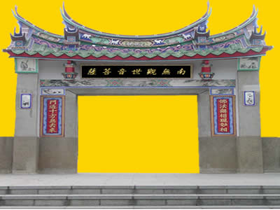

何 為 “ 密 多 院 ”
密多的含意是大般若最上經，經中之神，一卷經。
密多爲宇宙之心。密爲大日如來，多爲以觀音爲首的九宮
密多爲太極。密多爲宇宙多層次生靈的總歸處。
密爲濃縮，凝聚。多爲發射，萬物之母。
密爲陽春白雪，多爲夏裏巴人。
密多爲兩極，合之爲無極。
密多爲佛王，十方三世一切佛的大總持。
密多是時間的濃縮，是永，是零。
密多是太始太初，太微太極。迎之不見其首，隨之不見其後。
何爲院？大日如來文殊院。書院、科學院、研究院，修道院。安養院、心靈淨化院、生命本質研討院、生命學院、宇宙生命學院。
回 首 頁 ｜ 上 一 頁 ｜ 下一頁 |